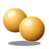
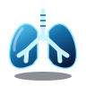
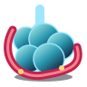

VIAGEM DO O₂Fisiologia em equipe Laboratório de experiênciasDO AR AOS TECIDOS
A viagem do
oxigênio.
Uma molécula conecta o corpo inteiro.
Uma turma conecta as explicações.
Revisem a fisiologia, investiguem um caso e descubram, em equipe, o que acontece em cada estação.
Explorar o simuladorRevisãoCasoSimulaçãoDesfecho
O₂Pequena molécula.
Uma grande viagem.
Uma grande viagem.
O PERCURSO
Cada estação tem uma função.
Todos fazem parte da mesma corrente.

01Ventilação
02Difusão03Arterial
04Coração
05Distribuição
06Tecido
07Retorno
ALUNOS
Embarcar com a turma
Seu grupo, sua estação e uma missão compartilhada.
Salas ao vivo em preparação. Por enquanto, explore a aula no simulador.
PROFESSOR(A)
Conduzir a viagem
Veja o telão, acompanhe os celulares e experimente as etapas da atividade.
Simular uma aula